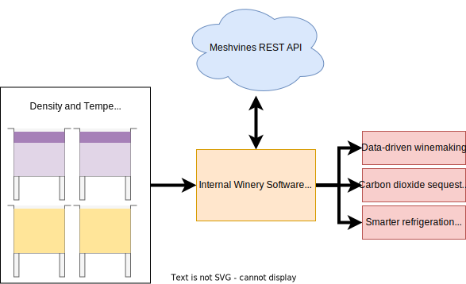

About
Given the importance of wine fermentation to eventual wine value, there is significant motivation to apply real-time measurements and computational methods for the early detection of abnormal patterns. The measurements of density using sensors, combined mathematical models describing the kinetics of fermentations can now be used to predict fermentation outcomes before they occur. Using nonlinear parameter estimation techniques, the model parameters the minimize the objective function can be found, however, many parameter estimation techniques are limited by their complexity, need for an initial guess close to their final value or long computation time. An automated modeling system that can handle many concurrent fermentations and estimate parameters of a wine kinetic model under a time constraint should be independent of any human interaction.
Meshvines is a REST API that uses a wine kinetic model to predicted future fermentation behavior. The parameters are estimated under the time and resource constraints of a REST API. The REST API platform enables developers to easily implement fermentation modeling capabilities in exisisting fermentation modeling technologies. As a serverless solution, Meshvines automatically grows to handle incoming requests. Meshvines can be used to predict fermentation trajectory, heat release, carbon dioxide release and ethanol emissions. Integrated into a winery's infrastructure, meshvines can be used to enable data-driven winemaking decisions, more intelligent use of energy, carbon sequestration systems and more!